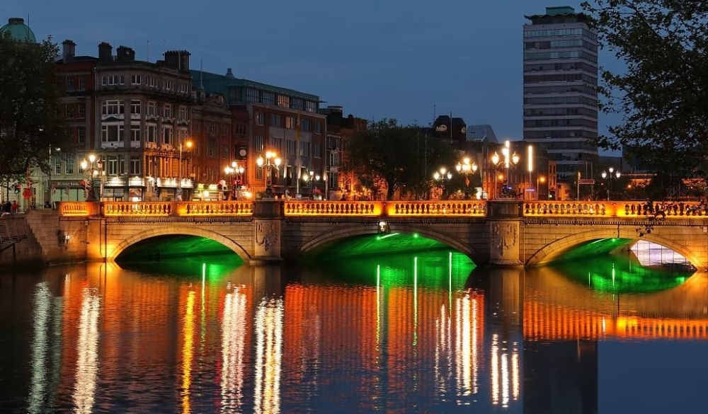

Descoperă Dublin - O incursiune în capitala vibrantă a Irlandei
Dublin este un oraș plin de viață din Irlanda, oferind o gamă variată de atracții pentru vizitatori:
-

Trinity College - Istorie academică
Universitate veche de secole, găzduiește Book of Kells și Long Room, biblioteca impresionantă.
-

Fabrica Guinness - Cultura berii
Puteți afla despre procesul de producție a berii Guinness și să vă bucurați de o panoramă de la Gravity Bar.
-

Temple Bar - Vibrație culturală
Acest cartier boem oferă galerii de artă, restaurante, pub-uri și evenimente culturale.
-

Castelul Dublin - Istorie regală
O bijuterie istorică care a găzduit evenimente regale și este deschisă pentru vizitatori.
-

Phoenix Park - Oază verde
Unul dintre cele mai mari parcuri urbane din Europa, gazdă pentru cerbi și evenimente.
Concluzii
Dublin îmbină istoria cu energiile contemporane, oferind o experiență autentică a culturii irlandeze.